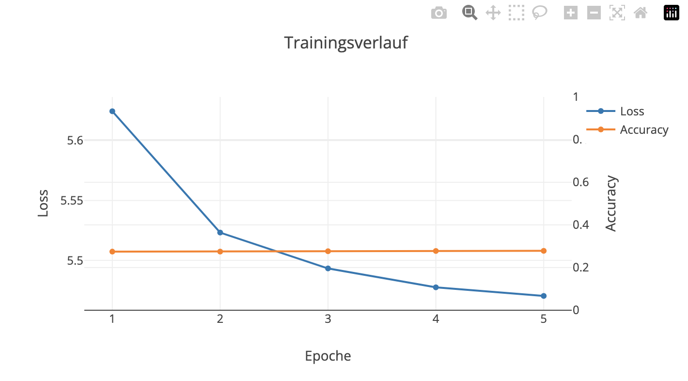
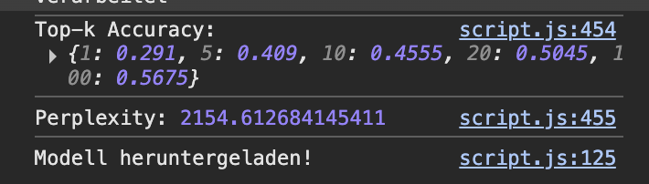

Verwendet wird ein Stacked LSTM mit folgendem Aufbau: Embedding (Dimension 64) -> LSTM (100 Units, returnSequences=true) -> LSTM (100 Units) -> Dense (Vokabulargröße, Softmax-Aktivierung). Als Input dienen die letzten 3 Wörter (Sequenzlänge = 3), als Ziel das jeweils darauffolgende Wort.
Begründung: Zwei gestapelte LSTM-Schichten erlauben es dem Netz, zeitliche Muster auf zwei Abstraktionsebenen zu lernen, die erste Schicht erfasst lokale Wortfolgen, die zweite abstrahiert darüber. 100 Units pro Schicht sind ein Kompromiss zwischen Modellkapazität und Trainingsgeschwindigkeit im Browser. Cross-Entropy (konkret "sparseCategoricalCrossentropy", da die Zielwerte als Integer-Indizes statt One-Hot-Vektoren vorliegen) ist der Standard-Loss für Klassifikationsprobleme mit Softmax-Output.
Ich habe leider wenige Experimente mit anderen Architekturen/Parametern durchgeführt, da das Training im Browser sehr lange dauert. Ich habe zuerst mit einem kleinerem Datensatz trainiert, um die Loss-Kurve zu beobachten und die Lernrate zu testen. Allerdings hat auch dieser Datensatz schon mehrere Minuten pro Epoche benötigt (habe 5 Epochs gemacht), sodass ich nicht viele Variationen ausprobieren konnte. Habe dann den verwendeten Datensatz auf 5000 relevante Wörter reduziert, um die Trainingszeit zu verkürzen. Dies hat aber aucb sehr lange gedauert. Die Lernrate habe ich auf 0.01 belassen, da sie sich als stabil erwiesen hat. Epochs habe ich dadurch auch niedrig gelassen. Hier war das Problem mein Laptop bzw. meine Hardware, die nicht genug Leistung hatte, um das Modell schneller zu trainieren.

Gemessen auf einer zufälligen Stichprobe von 2000 Sequenzen aus den Trainingsdaten (Vokabular auf die 5000 häufigsten Wörter reduziert, Training über 5 Epochen):
| k | Accuracy (Top-k) | Bemerkung |
|---|---|---|
| 1 | 29,1% | Genau richtig vorhergesagt |
| 5 | 40,9% | Korrektes Wort unter den 5 wahrscheinlichsten |
| 10 | 45,6% | Korrektes Wort unter den 10 wahrscheinlichsten |
| 20 | 50,5% | Korrektes Wort unter den 20 wahrscheinlichsten |
| 100 | 56,8% | Korrektes Wort unter den 100 wahrscheinlichsten |
Perplexity: 2154,6 (berechnet als Mittelwert) über die Stichprobe, anschließend exponenziert. Bei zufälligem Raten läge die Perplexity bei einem Vokabular von 5000 Wörtern bei ca. 5000, ein perfektes Modell läge nahe 1. Der gemessene Wert zeigt, dass das Modell bereits deutlich mehr als zufälliges Raten leistet, aber noch am sehr Anfang des Lernprozesses steht.
Der Trainingsverlauf über die 5 Epochen zeigte einen klar sinkenden, sich abflachenden Loss (5,62 -> 5,52 -> 5,49 -> 5,48 -> 5,47), was auf ein grundsätzlich funktionierendes Lernverhalten hindeutet. Die Top-1-Accuracy von 29,1% liegt über dem Zufallsniveau, was zeigt, dass das Modell vor allem häufige Wörter bereits gut vorhersagt. Die vergleichsweise niedrige Top-100-Accuracy (56,8%) und die hohe Perplexity deuten jedoch darauf hin, dass mit mehr Trainingsepochen noch deutliches Verbesserungspotenzial bestanden hätte – die geringe Epochenzahl war hier durch die begrenzte Hardware-Leistung meines Laptops limitiert
Ich habe ein paar anfangende Worte in das Feld geschrieben und den "Auto"-Modus gestartet. Das Modell hat dann die nächsten Wörter vorhergesagt und ich konnte sehen, dass es einige Passagen aus dem Trainingskorpus fast wörtlich wiedergegeben hat. Dies deutet darauf hin, dass das Modell die Trainingsdaten teilweise memoriert hat. Das lag aber auch hauptsächlich an einem kleinen Datensatz und einer geringen Anzahl an Trainings-Epochen.
Dies stellt ein reales Datenschutzproblem dar: Enthalten die Trainingsdaten sensible oder personenbezogene Informationen (z. B. private Nachrichten, interne Dokumente, medizinische Daten), könnten andere durch gezieltes Prompting versuchen, diese Inhalte aus dem Modell zu extrahieren (sog. Extraction Attack). Je kleiner und homogener der Trainingsdatensatz und je länger/intensiver trainiert wird, desto höher das Memorization-Risiko.
Das LSTM-Sprachmodell lernt auf kleinen, homogenen Textkorpora schnell häufige Wortmuster, was zu einer vergleichsweise hohen Top-k-Accuracy führt. Beim kleinen Datensatz gab es immer mal wieder "Loops", in denen sich das Modell wiederholte. Also immer wieder das selbe Wort oder die selbe Phrase vorhersagt. Bei einem größerem Datensatz war das nicht der Fall. Allerdings ergab sich hier das Problem, dass sehr seltsame Wortkombinationen vorhergesagt wurden. Diese hatten oftmals nicht mal einen Zusammenhang mit dem vorherigen Wort bzw. Wörtern. Zusätzlich zeigte sich, dass ein großes Vokabular (ursprünglich über 40.000 Wörter) das Training im Browser stark verlangsamte; erst die Reduktion auf die 5000 häufigsten Wörter machte mehrere Trainingsläufe innerhalb praktikabler Zeit möglich. Dies ging jedoch auf Kosten der Ausdrucksfähigkeit des Modells, da seltenere Wörter nicht mehr vorhergesagt werden können. Ebenso tritt hier auch sehr stark das Problem mit den sich wiederholenden Wörtern hervor. Insgesamt war die verfügbare Rechenleistung meines Laptops der limitierende Faktor für Modellgröße, Vokabularumfang und Trainingsdauer.
Technisch: verwendete Frameworks:
Technische Besonderheiten:

Fachlich: Implementierung: